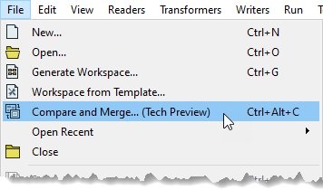
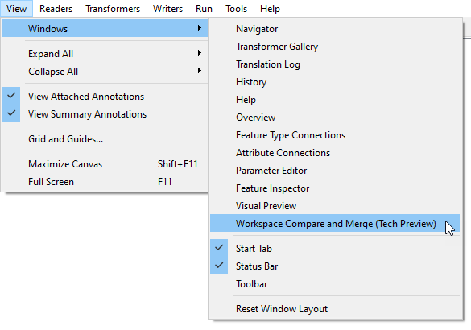
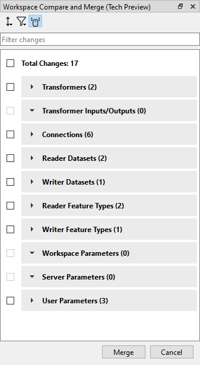
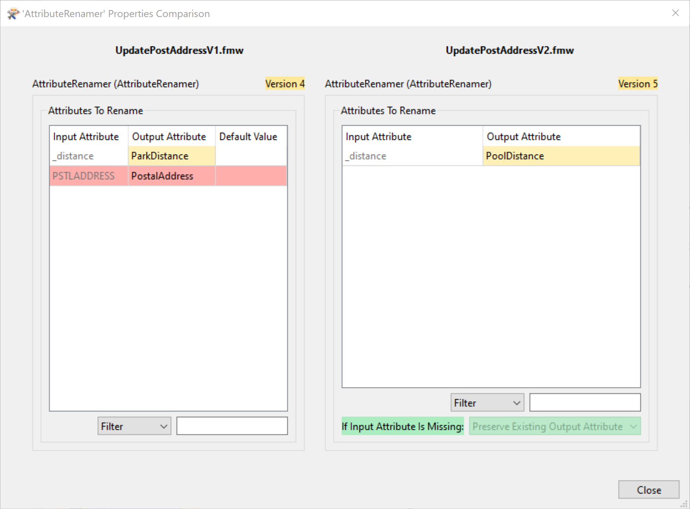

Learning Objectives
After completing this unit, you’ll be able to:
- Open the Workspace Comparison window.
- View and understand the list of changes in the Workspace Comparison window.
- Merge selected changes in the Workspace Comparison window.
What is Visual Workspace Comparison and Merge?
Visual Workspace Comparison and Merge (Workspace Comparison for short) allows users to compare two workspaces simultaneously, seeing the changes between the two workspaces. These changes are represented visually, allowing the user to quickly distinguish what has been modified, added, or deleted. They can then merge these changes into the workspace they are working on.
One of FME’s strengths is its ability to build complex solutions that apply in multiple departments of an organization. Colleagues often share workspaces and make iterations on those workspaces. Inheriting a workspace from a colleague or working on a workspace together has often resulted in a lot of back and forth, sharing screenshots. Workspace Comparison aims to save time and improve on this collaborative experience.
Where Can I Find Workspace Comparison?
Workspace Comparison can be found in two ways. Within FME Desktop, in a blank workspace or already populated workspace, click the File > Compare and Merge (Tech Preview). This will open the file explorer, where you can select the workspace you would like to compare.


You can also find Workspace Comparison by clicking View > Windows and selecting Workspace Comparison (Tech Preview). This will open the Workspace Comparison window. Here you can select the workspace you would like to compare to your current workspace, just like the first method described above.


How Does Workspace Comparison Help?
For those of you that are new to FME, traditionally to compare two different workspaces in previous versions of FME Desktop, you would need to open two instances of FME Desktop Workbench and open the two workspaces you would like to compare side by side. This method had its pros and cons. But if you were only working on one screen it meant lots of going back and forth between the two instances of FME, and it was often time-consuming trying to find where changes occurred, e.g., if a parameter had been changed in a transformer. Or, if you are working on a workspace with a colleague, there would be a lot of back and forth - sharing of screenshots and even videos.
Likewise for some users of FME Desktop that have very large workspaces which accomplish a lot of tasks, often trying to find the changes that had been made between the two different versions of these workspaces could take quite a while. Workspace Comparison will help solve these challenges. This tool will help to reduce time spent looking for changes in workspaces, allow for better collaboration between teams, colleagues, and departments in organizations - in turn saving you time to solve even more data challenges.
How Does Workspace Comparison Work?
Workspace Comparison works by looking at each workspace side by side and providing you with a list of the changes that appear between the two workspaces.

The workspace on top is your base workspace, the one you already had open in FME Workbench. The one below is the one you are comparing to, but note that it's displayed as a unified view containing any additions or deletions from the base workspace. You can edit the top workspace and the comparison will instantly update to reflect the changes.
Changes are color-coded to make it easier to see the changes.
- Green means something has been added to the workspace.
- Yellow means something has been modified.
- Red means something has been deleted.
What changes does Workspace Comparison look at? FME will look for non-cosmetic changes, meaning it will look for changes made to Transformers (Including custom transformers), Transformer Input/Outputs, Connections (between transformers), Reader datasets, Writer datasets, Reader Feature Types, Writer Feature Types, Workspace Parameters, Server Parameters, and User Parameters.

Or, you can specify to view the changes by Change Type, meaning it will show what has been Added, Modified, and Deleted from the workspace.

You can search for changes using the Filter changes bar.
You can review the changes by clicking on each change in the Workspace Comparison window. The canvas will zoom to that change, and FME will highlight changed objects with the corresponding color to match the change. Both canvases are synchronized, meaning that if you click on a modified transformer, for instance, the canvas navigates to that transformer. This also applies to zooming and panning on the canvas. This option can be disabled by clicking the Toggle Synchronized Navigation option on the Workspace Comparison window (by default this is turned on). Likewise, by clicking the highlighted change on the canvas, the corresponding change will be highlighted in the Workspace Comparison window.

Clicking the cogwheel next to changes in the Modified section of the Workspace Comparison window will show the parameters side by side. In this case, we can see the parameters of the FeatureJoiner. Within a transformer, the same methodology applies: added parameters are green, modified parameters are yellow. FME will also highlight if there has been a change in the version as well as new parameters in the transformer.


Now that you have reviewed the changes, you can modify your existing workspace with some of the changes in the Workspace Comparison window. You can choose the changes that you would like to implement. Holding CTRL (or Cmd ⌘ on Mac) and clicking the checkboxes will let you select the changes you want to merge.

When you’ve selected the ones you want, click the Merge button, which can be found at the bottom-right corner of the Workspace Comparison window.